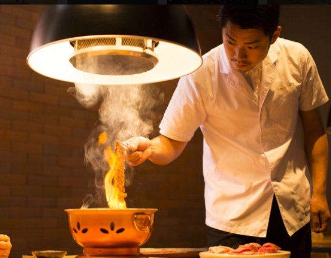

特上焼肉コース
¥16,500税込 / お一人様 / サービス料10%別
赤身を中心に、上焼肉コースよりもさらに厳選した部位をお出しします。その日の仕入れで内容は変わります。
- 前日までのご予約をお願いします
- 2〜3名様 2時間制 / 4名様以上 2時間半制
- ディナーはお子様のご入店をご遠慮いただいています
暖簾の奥で、焼師が焼く。
Fukuoka · Haruyoshi · Full-Attend Yakiniku
接待にも、記念日にも。
暖簾の内側という贅沢。
春吉店は、全席を暖簾で仕切った半個室。隣席の気配を遠ざけ、目の前には焼師だけがいる。完全予約制で、2〜3名様は2時間、4名様以上は2時間半。時間をゆっくり使っていただくための設計です。
肉はその日の仕入れから焼師が組み立て、ワインはソムリエがコースの流れに合わせてご提案。福岡の中心にいながら、声を落として話したくなる夜を。
暖簾一枚で、路地の喧騒も隣席の視線も遠ざける。半個室だからこその、落ち着いた会話と火の音。
塩から、タレへ。赤身から、脂へ。その日の肉を見て、焼師がコースの順番を組み上げます。
ソムリエが、肉の味わいにワインを重ねる。日本酒、焼酎のご用意も。

暖簾の、内側で。Haruyoshi焼師が焼き、
ソムリエが合わせる。
熊本本店で磨いたフルアテンドのスタイルを、2016年、福岡・春吉へ。カウンターでは、肉を焼き上げる焼師の手元を目の前に。テーブルでは暖簾の内側で、静かに。
上焼肉コースはより上質な部位を、特上焼肉コースは赤身を中心に、さらに厳選した部位をお出しします。
赤身を中心に、上焼肉コースよりもさらに厳選した部位をお出しします。その日の仕入れで内容は変わります。
焼肉すどう 春吉の基本。塩焼き、タレ焼き、締めの一品、デザートまで、焼師がテーブルで組み立てる一本です。
※ 価格は税込、サービス料10%を別途頂戴します。コースの内容および金額は仕入れにより変わります。
暖簾で仕切る、
全席半個室。
春吉の路地、パノラマスクエア博多の1階。30席すべてを暖簾で仕切り、どの席からも隣が気にならないようにしました。焼師の手元を眺めるならカウンターへ。ご接待や記念日には、テーブルの半個室へ。
完全予約制です。前日までにご予約をお願いいたします。ご接待・記念日のご相談もお気軽に。
050-3137-1010 Reservation · 17:00 – 24:00（L.O. 23:00）